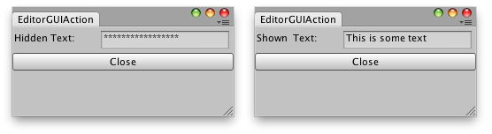

EditorGUI.actionKey
public static bool actionKey;
Description 描述
Is the platform-dependent "action" modifier key held down? (Read Only)
The key is Command on macOS, Control on Windows.

Action Key usage, key not pressed/key pressed.
using UnityEngine; using UnityEditor;
// Shows a password field with some "hidden" text. // When the user presses the action key the password field becomes a text field.
class EditorGUIActionKey : EditorWindow { string text = "This is some text";
[MenuItem("Examples/Show Hide password")] static void Init() { var window = GetWindow<EditorGUIActionKey>(); window.position = new Rect(0, 0, 250, 60); window.Show(); }
void OnGUI() { // Show the contents if (EditorGUI.actionKey) { text = EditorGUI.TextField(new Rect(0, 5, 245, 20), "Shown Text:", text); } else { // show the pasword field text = EditorGUI.PasswordField(new Rect(0, 5, 245, 20), "Hidden Text:", text); } if (GUI.Button(new Rect(0, 30, 250, 20), "Close")) this.Close(); }
void OnInspectorUpdate() { Repaint(); } }